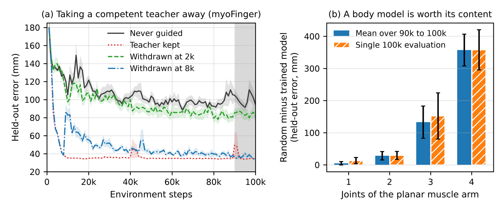
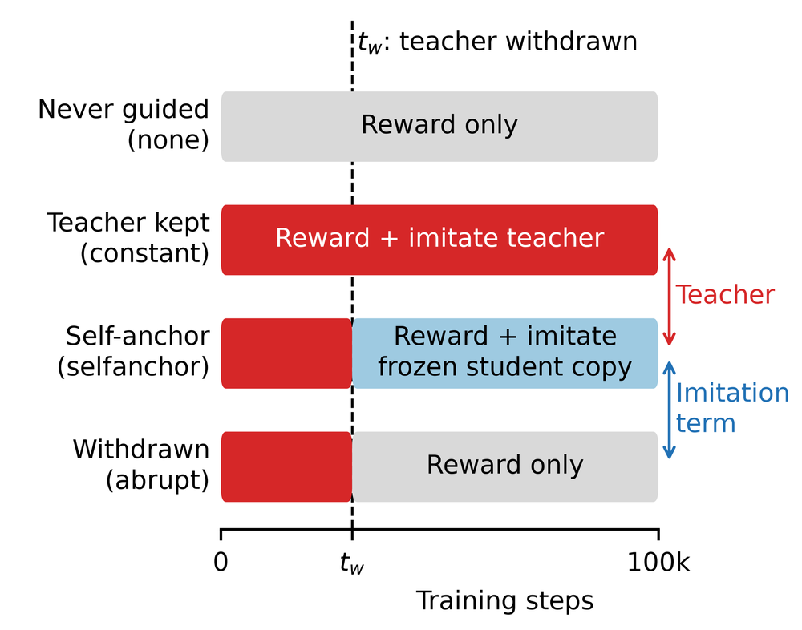
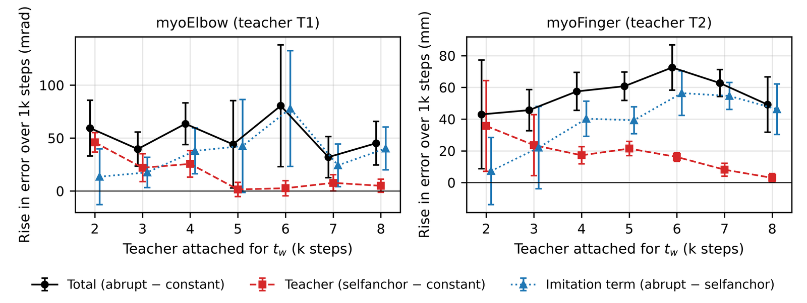
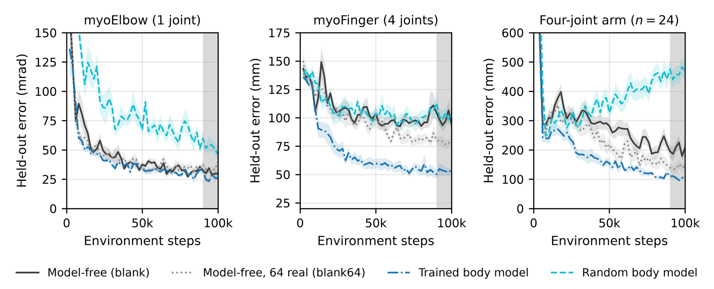

Motor learning · simulation · Under review at IEEE Transactions on Cognitive and Developmental Systems (TCDS-2026-0625)
A learner can be helped by a teacher it imitates or by a model of its own body. Two controls that change one thing at a time ask what each help is worth. On a muscle-driven finger, a learner whose competent teacher is withdrawn ends 43.25 mm ahead of one never guided, and it keeps more of the teacher's benefit the longer it was taught. On planar arms, a random body model becomes increasingly harmful as joints are added, and the trained model avoids that harm. All results are from simulation, on a single reach task.
Mu-Hua Wang · National Yang Ming Chiao Tung University · sole author
The whole study in 93 seconds, no sound. Footage: seed 0 of each condition on myoFinger after 100,000 steps, first two held-out targets, not a statistic (one seed, two episodes per clip). Every number on a card is a 12-seed result: trained body model minus model-free −46.19 mm, trained minus random model −50.11 mm, the competent teacher's student 37.46 mm against 120.53 mm for a near-motionless teacher's student.

The two findings (paper, Fig. 1). Left: on myoFinger, learners whose competent teacher is withdrawn at 2k or 8k steps rise sharply in error, recover and end below a learner never guided, the more so the longer they were taught. Mean of 12 seeds, band ±1 SE. Right: random-model error minus trained-model error on planar muscle arms, under both endpoints (bars: means, whiskers: 95% intervals, n = 12 on one and two joints, 24 on three and four).
Withdrawing a teacher removes its knowledge and changes the learner's training objective at the same moment. The control is a self-anchor. At withdrawal the teacher is replaced by a frozen copy of the student itself, so the imitation term stays and only the teacher is gone.
mm, myoFinger, n = 12, 95% CI [−54.72, −31.79], pooled over 7 withdrawal times
withdrawal at 2,000 → 8,000 steps, point estimates
one-sided 95% lower bound, more than half at p = 0.0008

The withdrawal conditions (paper, Fig. 2). Self-anchor minus teacher kept isolates losing the teacher. Withdrawn minus self-anchor isolates losing the imitation term.
The teacher on myoFinger is worth −61.71 mm against never being guided. Withdrawn at 2,000 or 3,000 steps, the learner keeps less than half of that. From 7,000 steps on, it is not detectably behind a learner that kept its teacher. Each extra 1,000 attached steps moves the withdrawn learner −8.70 mm further ahead of the never-guided one (95% CI [−10.07, −7.33]). The results hold at the single 100k evaluation too (−40.63 mm, share kept 22% → 99%).
A teacher is worth its competence. Same body, seeds and imitation loss, only the teacher differs. Seeds 0–3 (the first four, not chosen by outcome), first two held-out targets each: not a statistic (8 episodes per side). Banner: 12-seed means at 100k, 34.5 mm against 123.0 mm. Over 90k–100k the near-motionless teacher's student is worse than no teacher at all, by +21.36 mm (95% CI [+9.83, +32.89]). This comparison is outside the paper.

What the drop at withdrawal consists of (paper, Fig. 3). On myoFinger, from 4,000 attached steps on, the imitation-term component (blue) exceeds the teacher component (red) by 17.87 to 46.48 mm at every withdrawal time, each after a Holm correction. It carries 65% to 94% of the drop there. The teacher component shrinks with attachment partly by construction of the self-anchor.
On myoElbow the teacher is worth only −8.65 mrad, and its benefit does not outlast it. A deficit against never being guided is not detected (+1.76 mrad, 95% CI [−1.36, +4.89]), also when training is extended to 200k steps (+0.04 mrad, [−2.11, +2.19]). This is not detected at this power: a small deficit is not ruled out.
A body model learned from reward-free babbling is used to imagine extra experience. The control is a random model in the identical imagination machinery. Its predictions barely depend on the action: a change of action moves them 2% to 4% as much as it moves the trained model's.
| Planar arm | n | Trained minus random model (mm, 95% CI) |
|---|---|---|
| One joint | 12 | −4.92 [−10.28, +0.43] not detected at 90–100k |
| Two joints | 12 | −28.42 [−41.59, −15.25] |
| Three joints | 24 | −132.89 [−183.14, −82.64] |
| Four joints | 24 | −357.20 [−406.71, −307.69] |
Compared between bodies, the gap is larger on four joints than on one by 352.27 mm and on three joints by 127.96 mm (p < 0.001 under both endpoints). Most of the growth comes from the random model: against model-free learning it costs +22.02 mm on two joints, +97.37 on three and +262.20 on four. The trained model also beats the random one on myoElbow (−25.78 mrad) and myoFinger (−50.11 mm).
Content, not machinery. myoFinger after 100k steps: the babble-trained body model (left) against a random model in the identical imagination loop (right). Seeds 0–3, first two held-out targets each: not a statistic (8 episodes per side). Banner: 12-seed means at 100k, 54.4 mm against 103.1 mm. Over 90k–100k the trained model is ahead by −50.11 mm.
The body model against nothing. The frozen body model (left) against model-free SAC with the same budget (right). Seeds 0–3, first two held-out targets each: not a statistic (8 episodes per side). Banner: 12-seed means at 100k, 54.4 mm against 94.7 mm. Over 90k–100k: −46.19 mm (95% CI [−58.70, −33.69]).

Learning curves (paper, Fig. 4). Trained body model, random body model and two model-free baselines. Mean of seeds, band ±1 SE, gray band: the scored window.
What this does not show: against model-free learning with the same real data per update, the trained model's own advantage is not shown to grow with joint count. The claim is about the cost of uninformative imagination, not that a correct model is worth more on harder bodies.
One soft actor-critic learner in every condition, on six MuJoCo/MyoSuite muscle-driven bodies: an elbow, a four-joint finger, and planar arms of one to four joints. Twelve matched seeds per condition (24 on the three- and four-joint arms), evaluation on 20 held-out targets. Each result is reported under two endpoints, the mean over 90k to 100k steps and the single 100k evaluation. The ten primary tests survive a Holm correction (largest corrected p = 0.0018). The finger's competent teacher is the best of 12 candidate runs (35.6 mm). The study took more than 1,100 single-thread CPU-hours. Code and text were produced with extensive assistance from an AI system (Claude), as disclosed in the paper.
Scope: simulation only, a single reach task, deterministic and fully observed bodies. Each body has one teacher and one random model. Along the arm series, joint count, muscle count and biarticular muscles change together, and the one-joint arm cannot reach half of its held-out targets (error floor of about 58 mm). On myoElbow, no benefit of the teacher survives withdrawal. The threshold of one half, the late-mean endpoint and the primary family of tests were fixed after exploratory results had been seen, as stated in the paper.